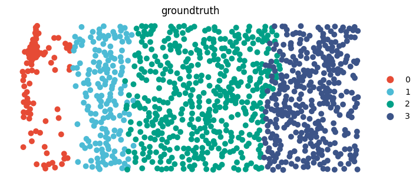
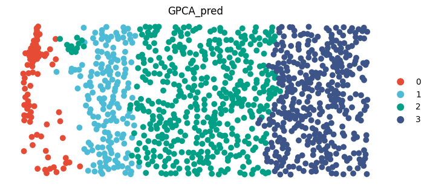
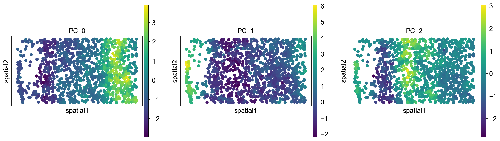
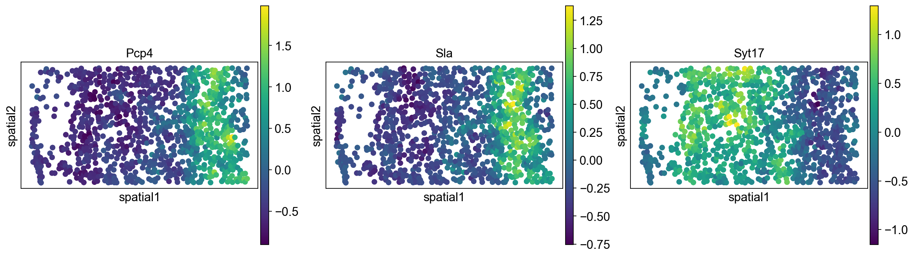
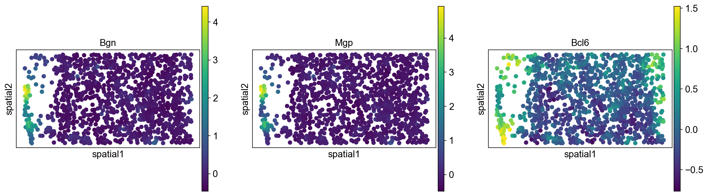
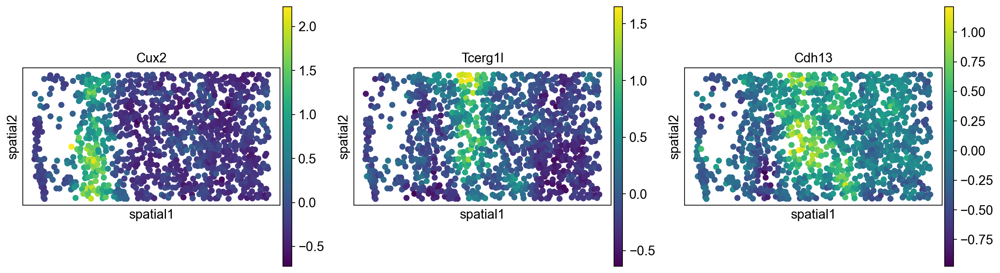

Tutorial 2: STARmap data (mPFC)
Here, we applied GraphPCA to the high-resolution image-based ST data, specifically the mouse medial prefrontal cortex (mPFC) data generated by STARmap. We downloaded annotations in both domain- and cell-levels of each cell from the original study as ground truth to evaluate clustering performance
Load packages
[1]:
import GraphPCA as sg
import scanpy as sc
import anndata as ad
import numpy as np
import pandas as pd
import squidpy as sq
from sklearn.cluster import KMeans
from sklearn.metrics import pairwise_distances as pair
from sklearn.metrics import adjusted_rand_score as ari_score
Setting parameters
[2]:
data_path = "../../data/STARmap/"
save_path = "../../results/STARmap/"
PCA_components = 50
STARmap_expr = pd.read_csv(data_path + "STARmap_expr.csv",index_col=0).T
STARmap_loc = pd.read_csv(data_path + "STARmap_loc.csv",index_col=0)
groundTruth = pd.read_csv(data_path + "STARmap_groundtruth.csv",index_col=0)["z"].astype("category")
adata = ad.AnnData(STARmap_expr)
adata.obs = STARmap_loc.copy()
adata.uns["spatial"] = np.array(STARmap_loc)
adata.obs["groundtruth"] =np.array(groundTruth)-1
adata.obs["groundtruth"] = adata.obs["groundtruth"].astype(int).astype("category")
adata
[2]:
AnnData object with n_obs × n_vars = 1049 × 166
obs: 'x', 'y', 'groundtruth'
uns: 'spatial'
Preprocessing
Before performing GraphPCA, we assumed that the gene expression counts have already been preprocessed with analytic Pearson residuals proposed by Lause et al. and further scaled for each gene to have 0 mean and unit standard deviation.
[3]:
adata.var_names_make_unique()
sc.pp.filter_genes(adata, min_cells=20)
sc.experimental.pp.normalize_pearson_residuals(adata)
sc.pp.scale(adata)
adata
[3]:
AnnData object with n_obs × n_vars = 1049 × 166
obs: 'x', 'y', 'groundtruth'
var: 'n_cells', 'mean', 'std'
uns: 'spatial', 'pearson_residuals_normalization'
Perform GraphPCA
[4]:
x_array=adata.obs["x"].tolist()
y_array=adata.obs["y"].tolist()
location=np.array([x_array, y_array]).T.astype(np.float32)
Z,W = sg.Run_GPCA(adata, location=location, n_components = 50, method = "knn", n_neighbors = 7, _lambda =0.5,
save_reconstruction=True)
adata.obsm["GraphPCA"] = Z
print(Z.shape)
(1049, 50)
Clustering
[5]:
estimator = KMeans(n_clusters=4)
res = estimator.fit(Z[:,:])
lable_pred=res.labels_
adata.obs["GPCA_pred"]= lable_pred
adata.obs["GPCA_pred"] = adata.obs["GPCA_pred"].astype('category')
refined_pred=sg.refine(sample_id=adata.obs.index.tolist(), pred=adata.obs["GPCA_pred"].tolist(), dis= pair(location),
shape="generic",neighbor_num=7)
adata.obs["GPCA_pred"]= refined_pred
adata.obs["GPCA_pred"] = adata.obs["GPCA_pred"].astype('category')
print(ari_score(adata.obs.GPCA_pred,adata.obs.groundtruth))
0.8682823215084668
Visualization
[6]:
adata.obs['GPCA_pred'] = pd.Series(sg.match_cluster_labels(adata.obs['groundtruth'], adata.obs['GPCA_pred'].values),
index=adata.obs.index, dtype='category')
[7]:
color_list = ["#E64B35FF","#4DBBD5FF","#00A087FF","#3C5488FF"]
sg.make_scatterplot(adata,column_name="groundtruth",
color_list=color_list,
coord_x="x",coord_y="y",
use_title=True,
only_point=True,
size=200,
figsize_width=7,
figsize_height=3 )
sg.make_scatterplot(adata,column_name="GPCA_pred",
color_list=color_list,
coord_x="x",coord_y="y",
use_title=True,
only_point=True,
size=200,
figsize_width=7,
figsize_height=3 )


[ ]:
Coexpression module
[8]:
GPCA_pcs = pd.DataFrame(adata.obsm["GraphPCA"])
GPCA_pcs.index = adata.to_df().index
GPCA_pcs.columns = [ "PC_" + str(i) for i in np.arange(GPCA_pcs.shape[1]) ]
[9]:
adata.obs = pd.concat([adata.obs,GPCA_pcs],axis=1)
[10]:
sc.set_figure_params( color_map = 'viridis',figsize=(5,5))
[11]:
adata.obsm["spatial"] = adata.uns["spatial"].copy()
del adata.uns["spatial"]
[12]:
sq.pl.spatial_scatter(adata,color=["PC_0","PC_1","PC_2"],shape=None)
WARNING: Please specify a valid `library_id` or set it permanently in `adata.uns['spatial']`

[13]:
GPCA_w = pd.DataFrame(W)
GPCA_w.index = adata.to_df().columns
GPCA_w.columns = [ "PC_" + str(i) for i in np.arange(GPCA_w.shape[1]) ]
[14]:
top_3_rows = {}
for column in GPCA_w.columns:
top_3_rows[column] = GPCA_w.abs().nlargest(3, column).index.tolist()
[15]:
sq.pl.spatial_scatter(adata,color=top_3_rows["PC_0"],shape=None,layer="GraphPCA_ReX")
sq.pl.spatial_scatter(adata,color=top_3_rows["PC_1"],shape=None,layer="GraphPCA_ReX")
sq.pl.spatial_scatter(adata,color=top_3_rows["PC_2"],shape=None,layer="GraphPCA_ReX")
WARNING: Please specify a valid `library_id` or set it permanently in `adata.uns['spatial']`
WARNING: Please specify a valid `library_id` or set it permanently in `adata.uns['spatial']`
WARNING: Please specify a valid `library_id` or set it permanently in `adata.uns['spatial']`



[ ]:
[ ]: